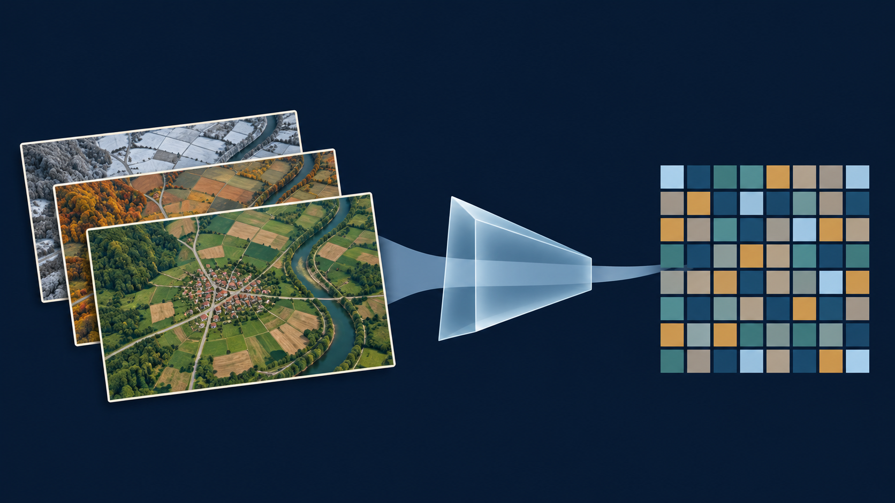
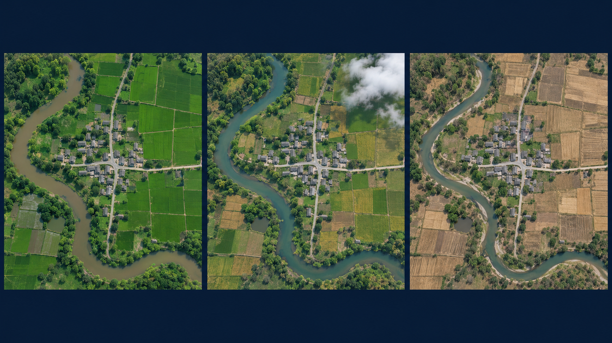
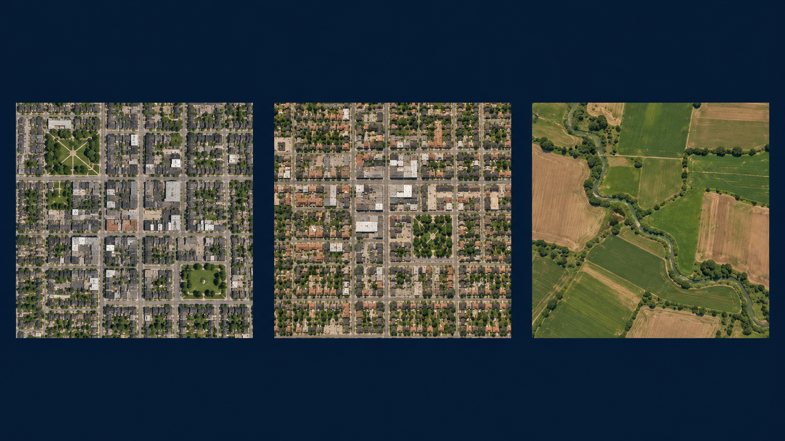
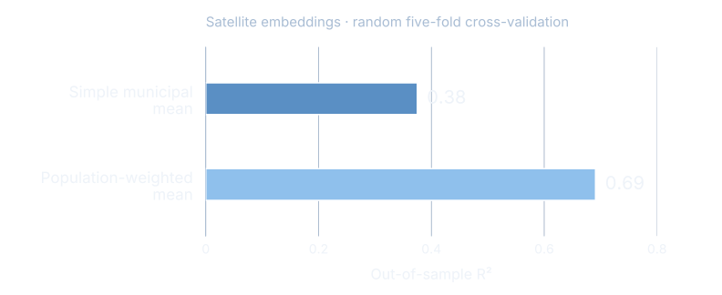
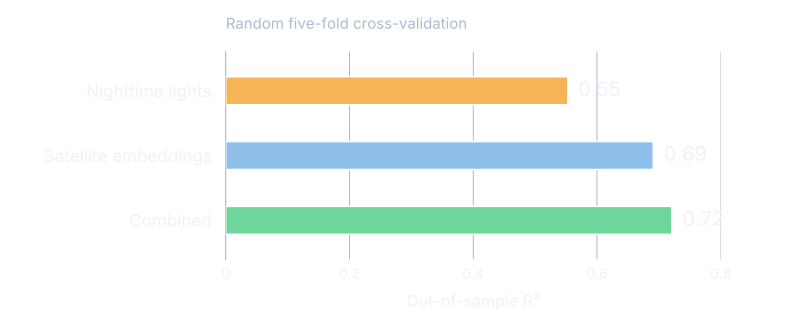
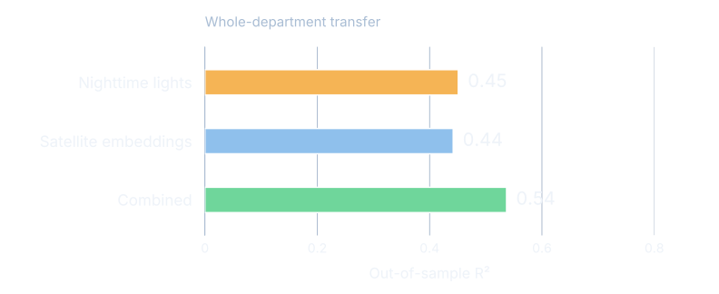
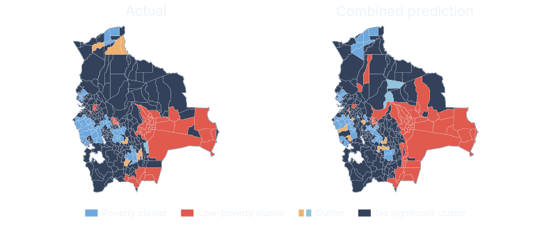

Mapping local development
What happens when AI meets satellite imagery
Illustrative orbital view of a generic Earth-observation satellite above Earth's day-night boundary, with daylight terrain and restrained settlement lights visible below.
AI turns repeated observations into useful predictors
Many observations AI model Numerical summary

The summary becomes an input to a separate prediction model.
This is the entire idea of the talk. We start with repeated observations of a place. A general-purpose AI model compresses the observations into a useful numerical description called an embedding. We can then ask whether those numerical descriptions help predict an outcome for which we have measured examples.
The picture is an analogy, not AlphaEarth’s literal architecture. It is a new AI-generated scientific illustration. The colored cells represent numerical features, not a geographic grid or a poverty classification. Sources: https://deepmind.google/blog/alphaearth-foundations-helps-map-our-planet-in-unprecedented-detail/ and https://developers.google.com/earth-engine/datasets/catalog/GOOGLE_SATELLITE_EMBEDDING_V1_ANNUAL .
One place looks different across a year
Repeated observations

The landscape includes both stable features and seasonal patterns.
Point to the same river bend, settlement and roads in each view. The appearance of fields changes, and some observations have clouds. An annual embedding uses observations across a calendar year, including the context around each pixel. It is richer than one photograph or a simple average of image colors.
These are AI-generated illustrative scenes, not actual observations, and no numerical result comes from them. Source for annual temporal coverage and neighborhood context: Google Earth Engine satellite-embedding catalog, https://developers.google.com/earth-engine/datasets/catalog/GOOGLE_SATELLITE_EMBEDDING_V1_ANNUAL .
An embedding summarizes a place as 64 numbers
AlphaEarth Foundations
64
numbers describing a place
One vector for each 10 × 10 metre location,
Vector simply means an ordered list of numbers.
Compact descriptions make large collections of observations usable.
AlphaEarth combines optical imagery with radar; “daytime embeddings” is shorthand here.
Define the unfamiliar word only after the audience has seen its purpose. A vector is an ordered list of numbers. AlphaEarth’s released annual dataset has 64 dimensions on a 10-metre grid. The grid spacing does not establish 10-metre accuracy for any downstream poverty estimate.
Technical qualification: generation uses optical and thermal observations from Landsat, optical Sentinel-2 and radar Sentinel-1. Broader sources such as elevation and geolocated text participate in training as targets. Thus the dataset is not daytime-optical-only. We retain the source study’s daytime-embeddings comparison label, while using satellite embeddings for the technical explanation. Sources: Earth Engine catalog and Google/DeepMind paper, Table S1 and supplement S16.2.2, https://arxiv.org/html/2507.22291v1 .
The numbers work together, without individual labels
Reading the vector
[ 0.23 , −0.51 , … , 0.07 ]
Illustrative values, not extracted data
Each position is alearned feature .
The whole pattern forms
There is no fixed “income number” or “roads number.”
These values are deliberately invented only to show what a vector looks like. They are not study data and are not used in any calculation. Each position has a consistent place in the representation, but an individual dimension has no fixed standalone semantic label such as income, roads or vegetation. The pattern across dimensions is what matters.
A useful analogy is a recipe of coordinates: the combined position carries information, even when a single coordinate is hard to interpret. Avoid describing this as principal components, because AlphaEarth is a learned nonlinear representation, not PCA. Source: Earth Engine catalog, section describing the unit-length 64-dimensional embedding vectors.
Similar landscapes can have similar embeddings
Similarity, not a poverty label

Resemblance can help prediction, but similar places can have different poverty outcomes.
Invite the audience to compare the first two places with the agricultural landscape. A model can encode a kind of resemblance without a person naming every roof, road or field. In the embedding space, similar observed characteristics can give similar vectors. This is intuition, not a measured nearest-neighbor result for these pictures. We have not extracted embeddings from these invented scenes.
Similarity is not identity and does not guarantee similar poverty. The model still needs local measured outcomes and validation. Image: new AI-generated illustration. Source for embedding similarity: Earth Engine dataset catalog and DeepMind AlphaEarth overview.
Poverty prediction still needs measured poverty data
Two separate learning tasks
1
Describe the landscape
A general-purpose model produces embeddings.
2
Learn the poverty relationship
Municipal summaries + measured poverty outcomes.
The outcome data gives the prediction its meaning.
Keep these steps separate. AlphaEarth was not trained in this study to predict poverty. The study takes its general-purpose representation and trains a separate supervised prediction model using measured municipal outcomes. A useful representation alone does not tell us which places have more or less poverty.
The Bolivia study uses random forests, tuned within nested cross-validation. A random forest combines many decision trees. Technical details are not needed on the slide, but the independent outcome and the held-out evaluation are essential to explain. Sources: source Bolivia deck, Data and methods; source tables in the local sources/tables directory; AlphaEarth paper https://arxiv.org/html/2507.22291v1 .
A municipality needs a summary of where people live
A large area can contain
Give more weight to pixels
Then use one summary
The unit of prediction is the municipality.
The embedding starts at a small grid cell, but our outcome is municipal. We therefore need to aggregate the features. A simple average treats every pixel equally, including large uninhabited areas. Population weighting emphasizes the landscapes where people live. It does not assign poverty to individual pixels or households.
The population raster shown is an existing analytical figure from the Bolivia deck (fig-pop-raster.png), not generated imagery. Its visible approximately 500-metre cells refer to the population layer, not the 10-metre AlphaEarth output grid. Source figure and provenance: quarcs-lab/project2026e-slides, scripts/fig-pop-raster.py and figures/README.md.
Poverty provides a concrete test in 339 municipalities
Bolivia
Municipal outcomes for 2017
SDG 1 “No Poverty” index
This is an index,
One application, one clearly defined outcome.
Outcome: Andersen et al. (2020), Municipal Atlas of the Sustainable Development Goals in Bolivia.
Introduce the case only after the audience understands embeddings. The Municipal Atlas supplies 2017 outcomes for 339 municipalities. This talk uses only SDG 1, the No Poverty index. It ranges from 0 to 100 with higher values indicating better achievement, hence less poverty. Do not describe it as the percentage of people in poverty or the number of poor households.
The broader research considers other development goals, but they are intentionally excluded from this talk. Cover image: existing Atlas cover from the Bolivia deck. Study counts and outcome interpretation: original source deck and frozen sources/claims.toml. Underlying Atlas: Andersen et al. (2020).
A useful prediction must work on places left out of training
Testing, not memorizing
Random municipal splits
Test municipalities are mixed
Can the model fill local gaps?
Whole departments held out
An entire region stays
Can it travel to another region?
Harder tests reveal where confidence should fall.
A prediction score is meaningful only when the model has not trained on the outcomes it is asked to predict. The study uses nested validation, keeping model tuning inside the training procedure. Random folds ask about interpolation among similar places. Holding out whole departments is a more demanding transfer test.
Spatial neighbors can resemble one another, so a random split may be optimistic about performance in entirely new regions. Neither design establishes future-year performance or performance in another country. Source: source deck methods and tbl-views-lodo.csv, tbl-mon-comprehensive.csv.
Population weighting strengthens the poverty signal
Satellite embeddings alone

Where we summarize the images matters for what we can predict.
Random municipal splits; mean out-of-sample R². Source: tbl-popweighting-master.csv.
The embedding model is the same. What changes is how pixel summaries are aggregated to municipalities. The simple mean gives an R² of 0.375, displayed as 0.38. Population weighting gives 0.691, displayed as 0.69. This is a large change in this study, not a guarantee that weighting always helps everywhere.
R² measures improvement in squared prediction error relative to a mean-only benchmark. Higher is better. These are mean test-fold R² values, not the R² from pooling every out-of-fold prediction, not percent accuracy, and not the share of households correctly classified. Source table: tbl-popweighting-master.csv, row Poverty (SDG 1), columns R² daytime embeddings (simple) and R² daytime embeddings (pop-weighted).
Daytime embeddings improve on nightlights in this test
Random municipal splits

The combined view adds a modest gain over embeddings alone.
Population-weighted features; mean out-of-sample R². Source: tbl-mon-featureset-comparison.csv.
Nighttime lights provide a useful baseline. Population-weighted nighttime features reach 0.553, embeddings 0.691, and their combination 0.721 in the random-split test. The chart rounds these to two decimal places. Do not call these percentages of accuracy or infer that the small combined gain is statistically significant without the relevant uncertainty analysis.
“Daytime embeddings” preserves the original study’s label, but AlphaEarth uses radar alongside optical imagery. The chart label “Satellite embeddings” is technically more precise. All values come from the No Poverty outcome only. Source: tbl-mon-featureset-comparison.csv, SDG 1 row, population-weighted columns.
Prediction becomes harder in an unseen region
Whole departments held out

Embeddings alone no longer outperform nightlights.
Population-weighted features; department-transfer R². Sources: tbl-views-lodo.csv; tbl-mon-comprehensive.csv.
This is the essential qualification to the previous slide. When a whole department is excluded from training, nighttime lights achieve 0.451, embeddings 0.442, and the combination 0.537. The comparison does not support universal superiority of embeddings. Local context and validation design change what the score means.
The rounded combined score is 0.54. Results vary across held-out departments. These values should not be described as a confidence interval around the random-split results or as lower/upper bounds guaranteed for every deployment. They are distinct evaluation designs. Sources: tbl-views-lodo.csv, SDG 1 row; tbl-mon-comprehensive.csv, SDG 1 row, Out-of-sample R².
Predicted poverty maps recover much of the spatial pattern

80% agreement across all classes, including places with no significant cluster.
Same-year spatial comparison using out-of-fold predictions. Source: tbl-views-comparison-sdg1.csv.
The left map classifies the measured No Poverty index, and the right map applies the same spatial analysis to predictions from the combined features. Red indicates a cluster of high index values, hence lower poverty. Blue indicates a cluster of low index values, hence higher poverty. Outliers differ from their neighbors. Gray denotes no significant local cluster at the study threshold.
The combined predictor agrees with the full measured classification for 79.646% of municipalities, displayed as 80%. This denominator includes the no-significant-cluster class; it is not 80% recovery of poverty clusters alone. Among the 104 measured high-high or low-low municipalities, agreement is 75%. Do not interpret a cross-sectional cluster as evidence of a persistent causal poverty trap. The spatial weights and randomization specification follow the source study and the regenerated map is checked against its table. Source: tbl-views-comparison-sdg1.csv and original _fourview.py.
A visible landscape cannot reveal every household’s life
What the evidence supports
Useful clues
Patterns in settlements
Tested municipal predictions.
Important unknowns
Income, needs and experiences
Causes of poverty.
Local surveys and people’s knowledge remain essential.
Return to people. These images do not directly observe income, household needs or the reasons people face deprivation. Municipal relationships cannot be assigned automatically to individual households. Prediction is not a causal explanation and cannot by itself tell us which intervention would help.
Additional risks include displaced or poorly measured outcome locations, unrepresentative training data, changed relationships in a new region or year, and error near a decision threshold. A high-resolution input does not remove these problems. Source: interpretation of the study’s municipal design; AlphaEarth dataset catalog for spatial output and scope. This is a limitation statement, not an additional empirical result.
Predictions can guide where to look next
An informed use of the map
1
Identify places worth checking
Use patterns to focus further investigation.
2
Verify with local evidence
Check uncertainty, new surveys and community knowledge.
An annual image update requires fresh validation before it becomes a poverty update.
The practical role is to help prioritize where to investigate, complement data collection, and inform discussion. The results shown test a single-year municipal relationship. They do not validate future-year poverty estimates. Annual embeddings make updated analysis possible, but an embedding change can reflect many landscape changes and cannot automatically be called a poverty change.
This slide proposes a careful use, not an evaluated policy intervention. Before operational targeting, evaluate error for the intended decision and population, test temporal transfer, consider fairness and local context, and keep measured social data central.
AI is most useful when local data anchors the map
Many observations.
Carlos Mendezcarlos-mendez.org
Close with the three ideas, pausing between them. Repeated Earth observations become manageable through a numerical representation. The representation can be useful for poverty prediction when measured outcomes anchor the model. Validation determines where that prediction deserves confidence.
Background: illustrative orbital artwork reused from the Bolivia deck. For discussion, the source study and all cited tables are documented in SOURCES.md accompanying the editable slide source. No additional indicators are included in this talk.